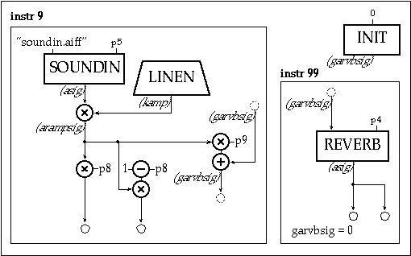

In the previous example you may have noticed the soundin source being "cut off" at ends of notes, because the reverb was inside the instrument itself. It is better to create a companion instrument, a global reverb instrument, to which the source signal can be sent. Let's also make this stereo.
Variables are named cells which store numbers. In Csound, they can be either local or global, are available continuously, and can be updated at one of four rates - setup, i-rate, k-rate, or a-rate.
Local variables (which begin with the letters p, i, k, or a) are private to a particular instrument. They cannot be read from, or written to, by any other instrument.
Global Variables are cells which are accessible by all instruments. Three of the same four variable types are supported (i, k, and a), but these letters are preceded by the letter "g" to identify them as "global." Global variables are used for "broadcasting" general values, for communicating between instruments, and for sending sound from one instrument to another.
The reverb instr 99 below receives input from instr 9 via the global a-rate variable garvbsig. Since instr 9 adds into this global, several copies of instr 9 can do this without losing any data. The addition requires garvbsig to be cleared before each k-rate pass through any active instruments. This is accomplished first with an init statement in the orchestra header, giving the reverb instrument a higher number than any other (instruments are performed in numerical order), and then clearing garvbsig within instr 99 once its data has been placed into the reverb.
sr
=
44100
; toot9.orc
kr
=
4410
ksmps
=
10
nchnls
=
2
; stereo
garvbsig
init
0
; make zero at orch init time
instr 9
idur
=
p3
iamp
=
p4
iskiptime
=
p5
iattack
=
p6
irelease
=
p7
ibalance
=
p8
; panning: 1=left, .5=center, 0=right
irvbgain
=
p9
kamp
linen
iamp, iattack, idur, irelease
asig
soundin
"soundin.aiff", iskiptime
arampsig
=
kamp * asig
outs
arampsig * ibalance, arampsig * (1 - ibalance)
garvbsig
=
garvbsig + arampsig * irvbgain
endin
instr 99
; global reverb
irvbtime
=
p4
asig
reverb
garvbsig, irvbtime
; put global signal into reverb
outs
asig, asig
garvbsig
=
0
; then clear it
endin
In the score we turn the global reverb on at time 0 and keep it on until irvbtime after the last note.
; toot9.sco
; ins
strt
dur
rvbtime
i99
0
9.85
2.6
;ins
strt
dur
amp
skip
atk
rel
balance(0-1)
rvbsend
i9
0
1
.5
0
.02
.1
1
.2
i9
2
2
.5
0
.03
.1
0
.3
i9
3.5
2.25
.5
0
.9
.1
.5
.1
i9
4.5
2.25
.5
0
1.2
.1
0
.2
i9
5
2.25
.5
0
.2
.1
1
.3
e

Toot 9: Global Stereo Reverb